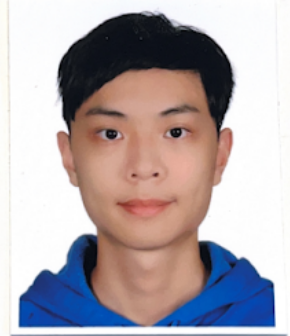

企業 Web 系統資安健檢
大學期間參與企業 Web 系統資安健檢，使用 Nmap、OWASP ZAP 與 Trivy 進行弱點掃描及風險分析，具備基本 Vulnerability Assessment 流程的實務認識。
Cybersecurity · Research · Practice
以資訊管理為基礎，持續探索資訊安全、密碼學與資訊隱藏。重視把研究理解轉化為程式實作、實驗分析與清晰的技術文件。

01 / Profile
資訊管理背景，連結資安工具、程式開發與研究實驗，持續累積扎實的技術能力。
資訊管理背景，具備資訊安全、Python 程式開發與資訊隱藏相關學習及實作經驗。大學期間曾參與企業 Web 系統資安健檢，實際操作 Nmap、OWASP ZAP、Trivy 等工具進行弱點掃描與風險分析。目前持續深化密碼學與資訊安全相關知識，接觸 One-Way Function、PPT、AES、RSA、ECC、後量子密碼學（PQC）、Zero Trust 與 Secure Supply Chain 等議題。具備將理論概念轉化為程式實作、實驗分析與技術文件的經驗，希望未來朝資訊安全、資安工程、Security Risk Assessment 或相關資訊技術領域發展。
02 / Practice
以已參與的實務經驗與持續投入的技術主題，建立可持續深化的資安實作脈絡。
大學期間參與企業 Web 系統資安健檢，使用 Nmap、OWASP ZAP 與 Trivy 進行弱點掃描及風險分析，具備基本 Vulnerability Assessment 流程的實務認識。
持續深化密碼學與資訊安全知識，接觸 One-Way Function、PPT、AES、RSA、ECC、後量子密碼學（PQC）、Zero Trust 及 Secure Supply Chain。
具備將理論概念轉化為 Python 程式實作、實驗分析與技術文件的經驗；研究興趣涵蓋資訊隱藏及 Digital Watermarking 等主題。
03 / Education
以資訊管理為核心，延伸至資訊安全、程式設計、系統與軟體工程。
FIELD OF STUDY
資訊系統 × 資訊安全 × 軟體實作
持續進修資訊安全研究所相關研究與專業能力，研究興趣聚焦於資訊安全、密碼學、資訊隱藏與新興資安技術。
04 / Technical Skills
以程式開發與資安工具為實作基礎，搭配研究閱讀及實驗分析能力。
Python
具備影像處理、演算法實作、資料處理與實驗程式開發經驗。
Nmap · OWASP ZAP · Trivy
具備基本網路探測、Web 弱點掃描與 Container Image 弱點分析經驗。
Git / GitHub、Postman、Swagger UI、Visual Studio / VS Code、WireGuard
REST API、JSON
Technical Paper Reading、Literature Review、Experiment Design、PSNR / SSIM Analysis
05 / Strengths
以踏實驗證、主動探索與清楚整理，持續建立技術深度。
能從技術論文與文件理解方法，再透過 Python 或相關工具進行實際驗證，不僅停留於理論理解。
曾實際使用 Nmap、OWASP ZAP、Trivy 等工具進行企業 Web 系統資安健檢，對基本 Vulnerability Assessment 流程具有實務認識。
除課程內容外，持續接觸 PQC、Zero Trust、Secure Supply Chain、Digital Watermarking 等新興資訊安全議題，並能閱讀技術文件與研究論文整理重點。